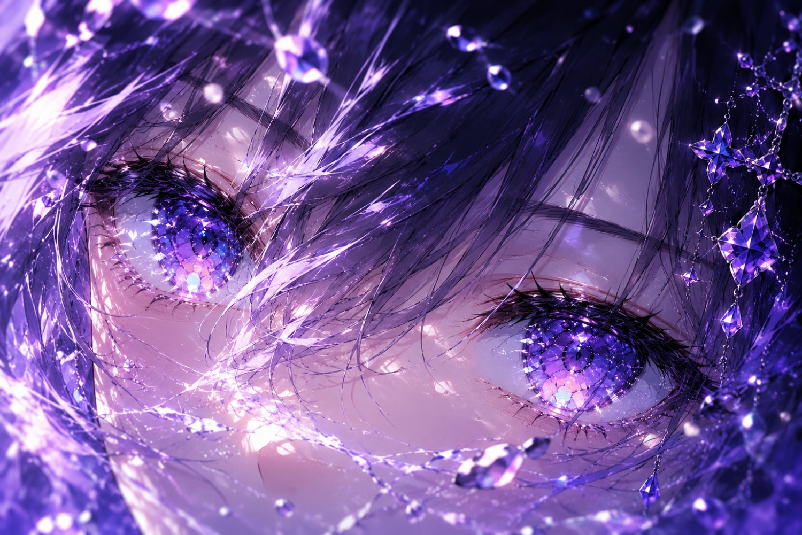
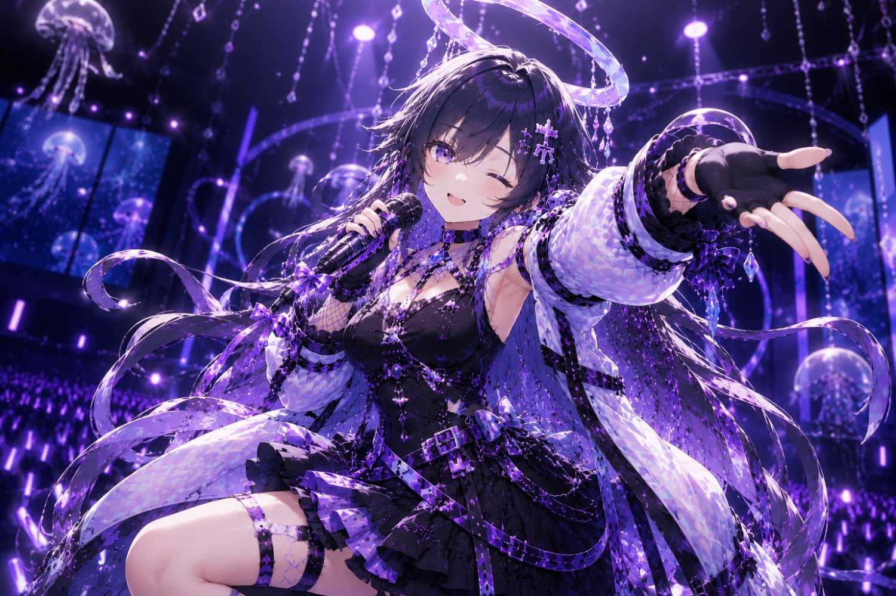

幽ヶ崎 海月 · DEEP PRISMAE LYRIC MV WORKSHOP
05
CINEMATIC
COMPOSITE
コンポジット撮影効果 — MVらしさの付与
映像に“撮影された質感”を与える。
光・揺れ・色のズレで、CGっぽさを消し作品に昇華する。
光・揺れ・色のズレで、CGっぽさを消し作品に昇華する。
GLOW
CHROMATIC
WIGGLE · TYPO

5
01TODAY'S GOALS
今日のゴール
Vコンテを“作品レベル”に引き上げる
- MVらしい光・揺れ・質感を作れる
- グロー・ブラー・色収差を適切に使える
- カメラシェイクを音と連動させられる
- 歌詞のキネティックタイポを作れる
“Make it shot, not rendered.”
CGっぽさを消し、撮ったように見せる。
5
02THE "SHOT" LOOK
MVの“撮影感”とは
これらが入ると“CGっぽさ”が消える
✦
光のにじみ
GLOW
◎
レンズの揺れ
SHAKE
⬓
色のズレ
CHROMATIC
❋
ピントの浅さ
DOF
▒
ノイズ
GRAIN
5つの“質感”が、画面をMVに変える。
5
03GLOW & BLUR
グローとブラー
光は“盛り上がりのスイッチ”、ブラーは“動きの気持ちよさ”
✦ GLOW — 光のにじみ
- 明るい部分を強調
- サビの盛り上がりに合わせる
- 色を統一すると世界観が安定
過剰にすると“安っぽく”なる。
◐ BLUR — スピード感
- 速い動き → ブラーを強める
- 止まる瞬間 → ブラーを弱める
- 音の強弱に合わせて変化
強弱が気持ちよさを生む。
5
04CHROMATIC ABERRATION
色収差 — レンズの味
RGBをわずかにズラし“レンズ感”を作る
PRISMPRISMPRISM
- 画面端に少しだけ入れる
- サビのインパクトに合わせる
⚠ 注意
強すぎると“ホラー”になる。あくまで“味”として。
5
05CAMERA SHAKE · WIGGLE
カメラシェイク
手持ちカメラの揺れ — シェイクは“臨場感”を作る
wiggle( 周波数 , 振幅 )
1スライダーで制御
強弱をパラメータ化
2サビで強く
盛り上がりに迫力を
3Aメロで弱く
静けさを保つ
5
06AUDIO-LINKED SHAKE
音と連動するシェイク
音が映像を動かす — 一致が“気持ちよさ”を生む
1
♪
オーディオ振幅
AMPLITUDE
2
⊟
スライダーに接続
LINK
3
◎
シェイクの強さ
SHAKE
4
✦
キックで揺れる
IMPACT
キックで揺れる → MVらしい迫力。
5
07KINETIC TYPOGRAPHY
歌詞のキネティックタイポ
歌詞は“読ませる”のではなく“感じさせる”
1不透明度
フェードイン
2トラッキング
文字間の広がり
3位置
上下の動き
海の底で海の底で海の底で
FADE → TRACK → ACCENT（音のアクセントに合わせる）

08LIVE DEMO · 30 SEC
実演：撮影効果の追加
Vコンテが“MVの画面”に変わる瞬間
グローをサビに
色収差を画面端
シェイクを音連動
歌詞を音に合わせ
5
09WORKSHOP · 30 MIN
ワーク：撮影効果入りVコンテ
画面に“MVらしさ”を与える
30秒のVコンテに撮影効果を追加
グロー・ブラー・色収差のいずれか
カメラシェイク1つ以上
歌詞のキネティックタイポ
講評ポイント — REVIEW
- 撮影効果の“適量”
- 世界観との整合性
- 音との同期
- 歌詞の視認性
- 過剰演出になっていないか

10HOMEWORK → NEXT
宿題
全曲に撮影効果を適用したVコンテ
カメラシェイクを音と連動させる
歌詞のキネティックタイポを全セクションに追加
NEXT — SESSION 06 最終仕上げと書き出し（YouTube最適化）
◂ スライド一覧へ戻る